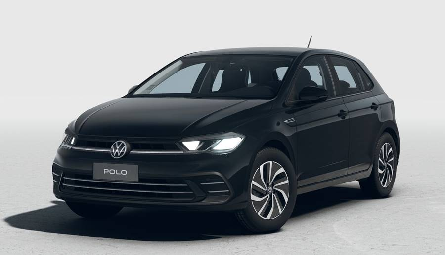

Os carros compactos premium como Polo, HB20, Onix, City e Peugeot 208 2026 se destacam pelo equilíbrio entre desempenho e tecnologia e pelo bom nível de conforto. Eles são ideais para quem busca mais que o básico, oferecendo recursos modernos no dia a dia.
Modelos como Volkswagen Polo Highline, Hyundai HB20 Platinum e Chevrolet Onix Premier trazem motores eficientes e bom desempenho urbano. Além disso, apresentam design atualizado e maior qualidade de acabamento em relação aos populares tradicionais.
O Honda City Hatch e o Peugeot 208 também se destacam pelo conforto e dirigibilidade. Esses veículos costumam oferecer central multimídia avançada, assistentes de condução e melhor isolamento acústico.
Mesmo com preço mais elevado, esses modelos entregam mais tecnologia, segurança e refinamento. Por isso, são considerados uma evolução dos carros populares, atendendo um público mais exigente.